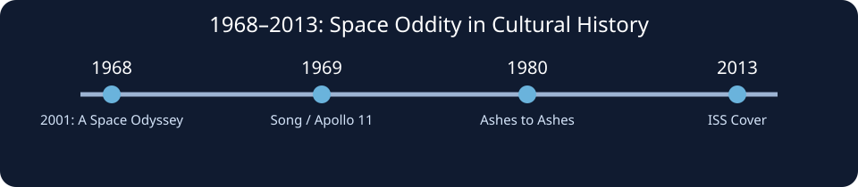

1969年，
未来突然成为现实
1969年7月11日，David Bowie 发行了《Space Oddity》。九天之后，阿波罗11号的宇航员踏上月球。
两个事件，一个属于唱片工业，一个属于人类航天史，却在后来的文化记忆里逐渐交织。前者以声音讲述离开地球的想象，后者则让这种想象第一次成为亿万人共同目睹的现实。
《Space Oddity》并不是为阿波罗11号专门创作的官方歌曲。Bowie 的灵感与电影《2001：太空漫游》密切相关。然而，作品恰好在登月前夕面世，使它像一枚被时代赋予额外意义的声音胶囊。


这是美国的工程，
也是人类的时刻。
登月发生在冷战背景之下，国家竞争、工业体系和科研资源共同推动了它。但电视屏幕另一端的观众，不一定首先想到国家之间的胜负。他们看到的是：一个人正在离开人类生活了数十万年的地球，踏上另一个世界。
国家完成了任务；
人类共享了它的象征意义。
这种双重身份，解释了为什么阿波罗计划能够同时进入美国国家历史与全球公共记忆。
一张唱片，
两个不同的年代
《Space Oddity》首先是1969年7月发行的单曲，后来收入同年11月推出的 Bowie 同名专辑《David Bowie》。1972年，唱片以《Space Oddity》为名重新发行，并换上更为人熟悉的封面。
因此，今天网络上常见的《Space Oddity》专辑图像，未必就是1969年最初发行时的封面。对一篇讨论历史的文章来说，这个细节十分重要：唱片封面也有自己的传播史。
歌曲在1969年进入英国排行榜前五，并在1975年再版后登顶英国单曲榜。它的文化影响并非一次性爆发，而是随着 Bowie 的艺术生涯和后续时代不断扩展。
封面图片用于介绍、辨识和评论作品，版权归原权利人所有。官方唱片资料 ↗
倒计时开始时，
听众也坐进了宇宙飞船。
《Space Oddity》最有力量的地方，并非只在于它讲述了太空。它把航天发射的倒计时直接变成了音乐的一部分，让原本抽象的时间具有事件感：某件不可逆的事情即将发生。
歌曲以地面控制中心和 Major Tom 之间的交流推动故事。发射前的秩序感，升空后的空间感，以及联系逐渐变得脆弱的情绪，构成了近乎电影式的声音叙事。
Stylophone、Mellotron 等电子与键盘音色，也帮助构建了当时流行文化对“未来”的声音想象。但这首歌并没有停留在科技奇观的层面。它逐渐从公共欢呼转向私人独白，从外部的伟大转向内部的孤独。
却不意味着能够摆脱孤独。

一个虚构的宇航员，
为什么比英雄更让人难忘？
Major Tom 并不完美。他会困惑，会与地面失去联系，也可能永远无法返回。正是这种脆弱，使他超越了特定国家、具体航天任务与单一时代。
他可以被理解为现代人的寓言：我们拥有前所未有的技术，却仍然要面对不确定的命运。这不是 Bowie 已确认的唯一解释，而是作品能够持续引发的开放性阅读。
技术拓宽了人的边界，
艺术追问边界之外还有什么。

一首歌如何活过它的时代？
作品问世时，作者拥有创作意图；作品进入社会之后，听众、媒体与后来的创作者会不断为它添加新的意义。文化记忆不是历史事实的复印件，而是每一代人反复理解、讲述和再演绎的结果。
Bowie 在1980年的《Ashes to Ashes》中再次使用 Major Tom 形象。2013年，加拿大宇航员 Chris Hadfield 在国际空间站演唱《Space Oddity》，让半个世纪前的太空想象与真正的轨道生活发生了奇妙的重逢。歌中的宇航员曾经是幻想，演唱它的人却真的身在太空。
《2001：太空漫游》上映，深刻影响太空文化想象。
《Space Oddity》发行；阿波罗11号完成首次载人登月。
Bowie 在《Ashes to Ashes》中重新唤起 Major Tom。
Chris Hadfield 在国际空间站翻唱歌曲，形成跨时代回声。
真正跨越国界的，
究竟是什么？
《Space Oddity》是英国艺术家的作品，却与美国的登月工程、国际科幻电影以及全球大众传媒形成了紧密联系。这种跨大西洋的文化交汇，提醒我们：文化影响力不一定严格沿着国界传播。
歌曲没有要求听众先认同某个国家的伟大，而是让每个人进入同一个问题：当人类走向未知，我们会感到希望，还是恐惧？个人经验为不同文化背景的听众提供了共同的入口。
但这种普遍性并非全部答案。英语传播网络、唱片工业、媒体平台与国际文化市场，同样决定了哪些作品更容易被全世界听见。文化软实力既关乎艺术的吸引力，也关乎传播资源的分布。
也许伟大的时代之歌，
从来不只属于那个时代。
阿波罗11号的历史已经写进教科书，而 Major Tom 仍然在音乐里漂浮。一个是确切发生的工程事件，一个是未曾存在的人物，却共同塑造了后人对太空时代的想象。
《Space Oddity》的生命力不只是记录了人类第一次登月，更在于它保留了技术进步无法完全回答的问题：当我们能够去往更远的地方，是否就更接近理解自己？
音乐在此不再只是时代的背景声。它成为时代的一种记忆方式，也成为未来继续追问过去的入口。
音乐提醒我们，人类仍在寻找自己。
图像、版本与延伸阅读
本页采用 NASA 历史照片（经 Wikimedia Commons 提供）、Cover Art Archive 唱片封面，以及仓库原创 SVG 信息图。NASA 图片一般为美国公有领域资料；唱片封面仍受版权保护，仅用于作品介绍和评论。图片为外部引用，加载受网络与来源站点可用性影响。
NASA：Neil Armstrong 肖像 · NASA：Apollo 11 图库 · David Bowie 官方专辑档案 · MusicBrainz：唱片封面来源 · 原始论文与参考文献
编辑说明：本文为文化评论与研究随笔，不是同行评审学术论文。历史事实、作品文本解读与文化理论判断应作区分。